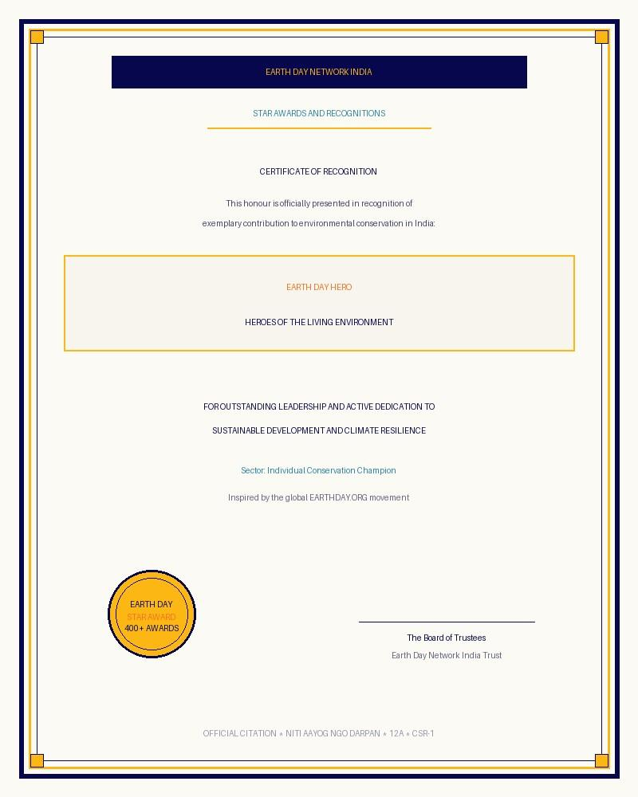

Earth Day, Every Day
Educate. Inspire. Mobilise. Act—for Our Planet
Every act counts. Together, we can build a greener, healthier and more sustainable Earth.
About Earth Day Network India
Environmental NGO in IndiaEarth Day Network India is a registered trust inspired by the global EARTHDAY.ORG movement.
We work with people and organisations across India toward a more sustainable future.
One Movement. Across India and the World.
EARTHDAY.ORG works with over 130 partner organisations across India and engages citizens in 192 countries. Filter by programme or select a location from the legend to explore our on-the-ground action.
Programme Locations
13 locationsEducate. Inspire. Mobilise. Act—for Our Planet


Earth Day is celebrated once a year, but our responsibility to the Earth is every day.
From rural farming belts to coastal mangrove ecosystems and nationwide schools, we turn environmental commitment into measurable grassroots impact.
Learn more about our missionA Glimpse of Our Impact Across India
5,00,000+
farmers engaged
through sustainable agriculture initiatives
3.0+ million
saplings planted
over the past decade, including extensive mangrove restoration
4,50,000+
fruit trees gifted
predominantly in impoverished areas to provide both sustenance and income
20,000+
rural women supported
through clean-energy awareness and adoption programmes
8,51,000+
Energy Literacy Training completions
With partners
1,00,000+
schools connected
each year through environmental awareness initiatives
4,50,000+
young people inspired
through Young Climate Champions initiatives
- Explore our programmes
Star Awards & Recognition Certificates
-
Earth Day Hero Heroes

-
Municipal Leader Urban
-
Women's Group Women
-
Rising Star Youth
-
Earth Star Civic
-
Village Award Rural
-
Clean Cooking Energy
-
Litter Free Cleanups
-
Star Campus Campus
-
Earthpreneur Green Biz
-
Panchayat Star Local Gov
-
Special Honor Security
Official Star Awards & Recognitions — citations and certificates presented to environmental champions across India.
400+
Star Awards and recognitions presented
to villages, women's groups, environmental leaders, clean-cooking champions, educational institutions, municipalities and religious sites advancing sustainability.
View the Awards


Building Nature's Future
From agriculture to clean energy, we act where nature needs us most across India.
Sustainable Food and Agriculture
Farmers for Earth connects farmers and Farmer Producer Organisations with experts, climate-resilient agricultural practices, financial opportunities and knowledge-sharing networks.
The Canopy Project™
Advancing afforestation, reforestation, agroforestry and large-scale mangrove restoration across climate-vulnerable landscapes in India.
Clean Energy & Climate-Resilient Communities
Our Healthy Energy programme promotes cleaner energy, practical low-carbon choices and clean-cooking solutions across rural and urban India.
Environmental and Climate Education
Environmental and climate literacy are central to our work, building green curricula, campus green audits and school awareness networks.
Empowering Youth
Our initiatives share climate knowledge with youth and showcase opportunities to be innovators, advocates and leaders in the emerging green economy.
Cleanups and Circularity
Through The Great Global Cleanup®, we mobilise volunteers and partners to remove waste from beaches, rivers, lakes, neighbourhoods and shared spaces.
Women
We empower women with knowledge, skills and opportunities to strengthen climate resilience, sustainable livelihoods and community leadership.
Sustainable Fashion
Our sustainable fashion initiatives champion responsible, circular and environmentally conscious garment choices and artisan handloom traditions.

Events
- 01 · Nominations
Nominations are open for……
More information to come. Placeholder
Award categories - 02 · Applications
Apply for……
More information to come. Placeholder
Project interest forms - 03 · Calendar
Go to events
Upcoming, ongoing and major past events.
See events
Action on the Ground


Turning Global Priorities into Action in India
Our programmes reflect global Earth Day themes while responding to India's environmental priorities and diverse social realities.
- No. 01 · Placeholder
Sustainable Food and Agriculture
Farmers for Earth connects farmers and Farmer Producer Organisations with experts, climate-resilient agricultural practices, financial opportunities and knowledge-sharing networks.
Read more - No. 02 · Placeholder
The Canopy Project™
Advancing afforestation, reforestation, agroforestry and large-scale mangrove restoration.
Read more - No. 03 · Placeholder
Clean Energy and Climate-Resilient Communities
Our Healthy Energy programme promotes cleaner energy and practical low-carbon choices.
Read more - No. 04 · Placeholder
Environmental and Climate Education
Environmental and climate literacy are central to our work.
Read more - No. 05 · Placeholder
Empowering Youth
Our initiatives aim to share climate knowledge with youth and showcase opportunities to be innovators, advocates, and community leaders in the green economy.
Read more - No. 06 · Placeholder
Cleanups and Circularity
Through The Great Global Cleanup®, we mobilise volunteers and partners to remove waste from beaches, rivers, lakes, neighbourhoods and other shared spaces.
Read more  No. 07 · Placeholder
No. 07 · PlaceholderWomen
We empower women with knowledge, skills and opportunities to strengthen climate resilience, livelihoods and leadership.
Read more No. 08 · Placeholder
No. 08 · PlaceholderSustainable Fashion
Our sustainable fashion initiatives champion responsible, circular and environmentally conscious choices.
Read more
Placeholder cards — final home-page text and photos for this section will be supplied by the client.
Voices Across Our Network
Ambassadors & Youth
Over 300 My Future My Voice youth ambassadors from 125 countries, championing grassroots sustainability in India and worldwide.
Learn moreAdvisory Committee
Distinguished experts, scientists, educators, and sustainability thought leaders providing strategic guidance to our programmes.
Learn moreCanopy Project Experts
Specialists in afforestation, native species selection, agroforestry and mangrove conservation across ecologically sensitive zones.
Learn morePartner Organisations Across India
Where We Work
Sample pinsInteractive map (OpenStreetMap) loads here.
Pins mark places named in the programme texts. Final project locations to be supplied by the client.
News
EDN in News- Date TBC
News headline placeholder
Short summary of the news item — to be supplied.
- Date TBC
News headline placeholder
Short summary of the news item — to be supplied.
- Date TBC
News headline placeholder
Short summary of the news item — to be supplied.
- Date TBC
News headline placeholder
Short summary of the news item — to be supplied.
Voices of Responsibility
Reflections and commitments from our trustees, leadership, and nationwide movement.